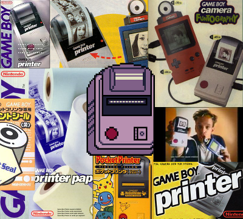
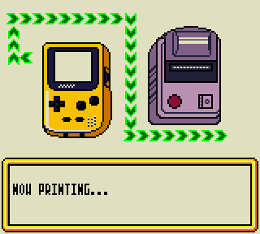
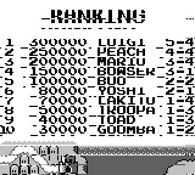
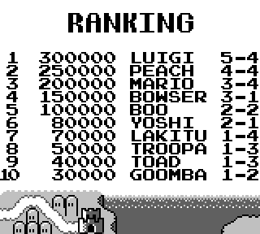

Nintendo has always been one to push the boundaries of what its consoles could do. Each system they released generally had a handful of additional accessories that brought new, unique functionality to gamers. The Game Boy saw plenty of extra hardware come its way. Perhaps one of the most well-known examples would be the Game Boy Printer. The Game Boy Printer was quite innovative for its time. Who had ever heard of a handheld gaming device that could connect to its own printer? For that matter, who had ever seen a printer come in such a relatively small package? (The GB Printer is certainly a brick, but it was physically one of the smallest printers of its time, probably). One of the main draws of the GB Printer was connecting it to the Game Boy Camera so people could actually print out their snapshots, however, many other Game Boy games later took advantage of the unit to print out pictures, scores, and other stuff like badges or certificates.
One of my goals with GBE+ is to program an emulator that is as complete as I can possibly make it. That means emulating devices like the GB Printer. To tell the truth, I had my eye on GB Printer support for some time, but only recently have I done enough work on the DMG/GBC core to make that possible. A long time ago, I tried getting the GB Printer to work in VBA-M (1.8.0) but the Linux version didn't seem to do anything. That is to say, VBA-M did emulate the printer as if it were connected, but it didn't save the image anywhere I could find. The Windows version worked flawlessly and showed me the final print as I expected. Maybe that was just user-error on my part, but it inspired me to one day make an emulator that would properly emulate the GB Printer on Linux, my OS of choice. Digressing, let's take a look at what the GB Printer is doing and how it interacts with a Game Boy system.
Can't you just press Ctrl+P?
The GB Printer connects to a Game Boy via the Link Cable. Communication between the printer and a Game Boy happens through Serial Input/Output. The Game Boy sends data to the GB Printer much like it would as if it were talking to another Game Boy. It writes bytes, then sends them over the Link Cable. There are a few differences, however. The Game Boy is always the "master", and the GB Printer is always the "slave". The GB Printer is constantly waiting for input to come to it in the form of commands, so it doesn't make sense for it to take the "master" role. At most, the GB Printer sends back bytes relating to the status of the printer. Most of the time, the GB Printer just sends back the byte 0x0 while data is transferred to it. Due to this relationship between the Game Boy and the GB Printer, these serial communications don't utilize the full duplex nature of Link Cable transfers. For the purpose of emulation, that isn't a big deal, however.
Communicating with the GB Printer follows a set protocol. A large block of data (a packet) is sent to the GB Printer via Serial I/O one after another. This data comes in a special format that the GB Printer interprets to determine what it should do with all those incoming bytes. Below is a list describing the layout of GB Printer packets.
The "magic" bytes are self-explanatory, just two bytes that the GB Printer checks for to make sure a printer packet is incoming rather than random garbage. The GB Printer only has 4 known commands (we'll get to that later) so in theory the command byte should only be the values listed above. The compression flag indicates whether dot-data sent to the GB Printer is compressed or not. The dot-data is basically the Game Boy's pixel data when a palette is applied to it, and in the context of the GB Printer, this means the image to print. Some commands to the GB Printer have data attached (generally for sending an image to the printer, but also print settings) so the packet records the length before sending the data itself. The GB Printer also expects a 16-bit checksum of the packet; the printer internally calculates its own checksum based on the bytes it receives and complains if the two checksums don't match. This is to prevent any communication errors from cropping up during transfers. The checksum is just calculated by adding all the bytes from the Printer Command through the Packet Data.
At the end of the packet, there are two bytes the Game Boy sends, both always 0x0. The first acts as a keepalive message. The GB Printer is supposed to send back a specific byte (0x80 or 0x81) to indicate it's still functioning after receiving the previous packet bytes. As I said above, most of the time the GB Printer sends back 0x0 when it receives a byte from a Game Boy, but these last two bytes in the packet are special since they cause the GB Printer to send something non-zero back. The last byte in the packet causes the GB Printer to send back the status code of the printer, which can potentially be non-zero.
So, once the GB Printer finishes receiving the packet, and assuming the checksums match, it goes on to process the command it was given. There are 4 commands: Init, Print, Process Data, and Status (0x01, 0x02, 0x04, and 0x0F respectively). Now we'll take a close look at all of these commands:
INIT - 0x1:
This command is simple and straightforward. All it does is clear the GB Printer's RAM buffer. The GB Printer comes with a data buffer just big enough for a 160x144 image (in 2BPP). When this command is called, the GB Printer clears it, so any image data that was already sent to the printer is erased.
PRINT - 0x2:
This command causes the GB Printer to print whatever is stored in the buffer. This command, unlike the others, take a fair bit of time to process, since the printer is actually moving gears and pushing paper. One of the neat things about emulation, however, is that the printing process is virtually instantaneous. A real Game Boy should ideally wait for the GB Printer to change it's status (to signal that printing is done) after issuing this command. The PRINT command always comes with 4 bytes worth of data in the data section of the packet. This information is used to specifiy printing settings.
DATA - 0x4:
This command sends dot-data to the GB Printer so it can store an image. The GB Printer can receive enough dot-data for one 160x16 segment of an image for each DATA command sent. The GB Printer gradually builds up a final 160x144 image. In essence, once 9 of these segments are sent, a full 160x144 page is ready to print. Games can still send less than 9 segments to print smaller images, of course. During this command, the GB Printer will decompress the dot-data if the compression flag of the packet was set.
STATUS - 0xF:
This command simply sends back 1 byte to the Game Boy indicating the current status of the GB Printer. This may seem redundant given that the status is always sent by the GB Printer whenever it finishes receiving a packet. However, it is still useful because packets with the STATUS command are small (9 bytes) and you don't have to send a dummy command (like a DATA command with no data), just to ping the printer. The GB Printer has quite a few status codes, for everything from timeouts to battery and temperature issues to paper jams. Checkout more here.

Sending and processing all of those packets takes time. Many games displayed animations like this while the above commands were being run.
The basic flow is for a game to send an INIT command followed by a certain amount of DATA commands. Once enough dot-data has been sent, the game issues a PRINT command, then it continues to send STATUS commands to check the current state of the printer. Once it detects that the printer is finished, it can optionally INIT again and repeat the process. The GB Printer is capable of printing very long images by simply repeating this process but setting the printing margins to zero so that the image is continuous when printed. For example, the Pokedex entries in Pokemon G/S/C are actually two images printed one after another. Now that we see how the GB Printer works, I'll detail the process of how I got it to work in GBE+.
Getting down to business
First of all, the major requirement for any sort of GB Printer emulation is having working Serial I/O, i.e. the Link Cable. When I first started working on the GB Printer, I had just finished up getting netplay running in GBE+, so I had everything set up to handle the GB Printer. Unlike netplay between two emulated Game Boys, communicating with an emulated GB Printer is far simpler (and doesn't need any sort of network connection). Instead of having GBE+ send the bytes to another copy of GBE+ running on the same network, I simply had GBE+ send the data to bits of code that merely act like a GB Printer. So instead of using SDL_net and all that, I just gave the necessary bytes to a few internal C++ functions.
The next step was to actually receive and inspect the packets the game was trying to send over the Link Cable. I decided the best way to handle that was to have the emulated GB Printer wait for the magic bytes, then process each section of the packet individually. I set up a C++ enum representing the current state of the printer, from waiting for the initial packet bytes to dealing with each part of the packet and printing and all that good stuff. To make sure nothing happens out of order, the emulated GB Printer is basically a small-scale state machine. Handling packet data is basic stuff and didn't take much time at all.
With that done, my emulated GB Printer could receive all the packets as long as it correctly returned the status of the printer. Now I could move on to actually printing whatever data the game had sent. GBE+ collected the dot-data from all the DATA commands and stored them in its own buffer. The emulator had to keep track of how many had been sent in case too many DATA commands were received (in that case, some data has to be overwritten, but no commercial games I tested do this). At first, I stuck to printing uncompressed data only. Most games use uncompressed data, so that provided me with plenty of tests. In fact, the only game I encountered that used compressed dot-data was Pokemon Trading Card Game. Anyway, printing the dot-data is not much different than drawing stuff from the Game Boy's VRAM; the dot-data format is identical. From there, I passed the buffer to a few functions and saved it as a bitmap file. Tada! Basic GB Printer support!
 
Of course, it does take a little trial and error to get just right...
While emulating the GB Printer proved relatively simple, I did struggle with one thing, however. For whatever reason, many games will send an empty DATA command. That is to say, they sent a DATA command, but Packet Data Length was zero, and it contained no bytes of dot-data. This was throwing me off because whenever a DATA command was received, I would try to fill the buffer. For example, even though the 1st DATA command was a dummy, I'd advance the pointer in my buffer by 160x16 pixels anyway, so the top portion of my final printed image was always blank. This became an annoyance because it I thought the problem had to do with printing margins, even though that was a false lead. As it concerns emulation, the printing margins can be totally ignored. If the emulated GB Printer prints out an image larger than 160x144, GBE+ just splits it into different bitmaps. The printing margins would potentially matter, however, if you want to put them together as a single image. Anyway, the dummy DATA commands were really the only trouble I encountered.
I'd like to take a moment to talk about the compression the GB Printer uses for some games, one of the last things I emulated for the GB Printer. As previously mentioned, a majority of the games that supported the GB Printer used uncompressed data (probably because it was easy enough to just transfer existing tiles from VRAM). A few games do use it, however. The compression algorithm is based on Run-Length Encoding. The sequence of bytes sent to the GB Printer is split into "compressed" and "uncompressed" sections called runs. Whenever the GB Printer is sent an uncompressed run, it simply copies the data wholesale. When it's given an compressed run, it copies a few bytes several times over. Allow me to demonstrate with some fictional example data. Imagine we have the raw, uncompressed stream of data like this:
0xFF 0xFF 0xFF 0xFF 0xFE 0x02 0x55 0x33 0x90
Notice how we have one sequence that repeats itself: 0xFF 0xFF 0xFF 0xFF. This is the same byte repeated 4 times, so it can be compressed using run-length encoding. The latter portion of the data stream has no pattern, therefore it remains uncompressed. So how does the GB Printer implement its run-length encoding? It requires that bytes be inserted into the above data stream. These bytes dictate which parts are compressed or not, then the GB Printer copies the data accordingly. Each of these bytes is simple. The MSB of the byte tells the GB Printer whether the run is compressed or uncompressed, and Bits 0-6 are the length of the run in bytes:
Compressed Run
Bit 7 is set. Bits 0-6 represent the length of the run - 2.
Uncompressed Run
Bit 7 is unset. Bits 0-6 represent the length of the run - 1
So in effect, the above sequence becomes this now:
0x82 0xFF 0x04 0xFE 0x02 0x55 0x33 0x90
Basically, the byte 0x82 tells the GB Printer that the next byte is repeated 4 times (0x2 + 2). So then the data stream looks like 0xFF 0xFF 0xFF 0xFF. After that it looks at the byte 0x04. This tells the printer that the next 5 bytes (0x4 + 1) are uncompressed, so it can just copy+paste things as necessary. And it's as simple as that.
Going paperless
That covers everything I wanted to say about the GB Printer. Leave it to Nintendo to come up with a printer that actually fits in your hand, powered by a handheld gaming system. While it is a cool accessory, not many game took advantage of it as one might think. According to Wikipedia, only 38 games are known to use it. That's a relatively small portion given how vast the Game Boy library was. Typical of many of Nintendo's cool features for the Game Boy, adoption rates weren't exactly stellar among game developers (even 1st party games tend to ignore the GB Printer). Still, the GB Printer got much wider support than other things, such as the Transfer Pak or the GBC IR port.
Now GBE+ supports the GB Printer. This fulfills a somewhat personal goal for me. I can print as much stuff as I want, as long as I have enough disk space. Who needs to use 6 AA batteries now? I'll never run out of paper again! And the printer won't jam!